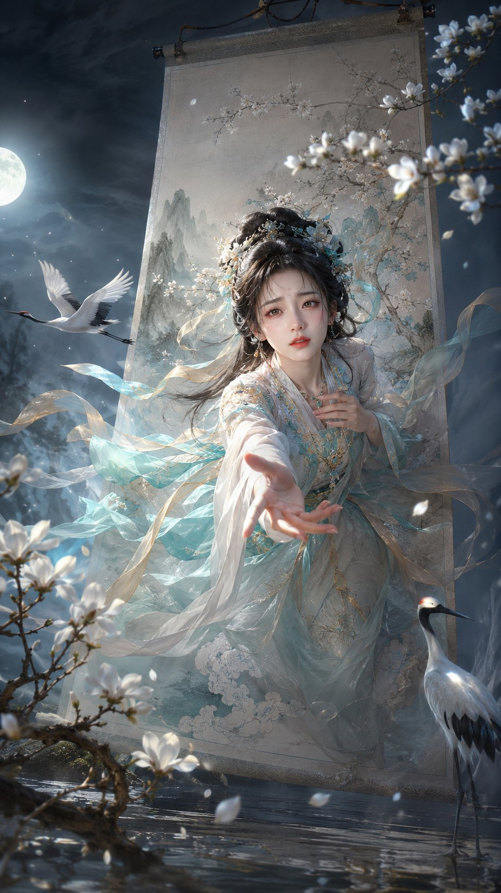

未见 · 第二期
给世界
留一点未见。
不是工具库，也不解释它如何发生。这里只收藏那些让人停下来，想发给朋友的作品。
我们不追逐所有新东西。
我们只留下那些，多年以后仍值得再看一眼的瞬间。
馆藏 · 第二期
十件未见之物
本期展品选自馆长在 X 上的真实收藏。
每件作品均在详情页标注作者与原帖；版权归原作者与创作者所有。
由人类审美策展
“如果它不值得单独发给一个朋友，
它就不该出现在这里。”
未见 · 第二期
不是工具库，也不解释它如何发生。这里只收藏那些让人停下来，想发给朋友的作品。

我们不追逐所有新东西。
我们只留下那些，多年以后仍值得再看一眼的瞬间。
馆藏 · 第二期
本期展品选自馆长在 X 上的真实收藏。
每件作品均在详情页标注作者与原帖；版权归原作者与创作者所有。
由人类审美策展
“如果它不值得单独发给一个朋友，
它就不该出现在这里。”